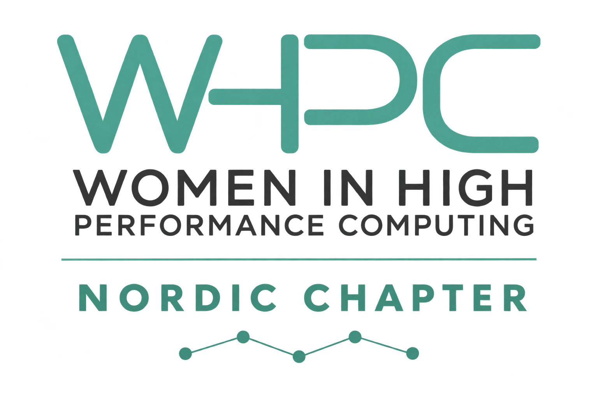

Connecting Women in High Performance Computing across Northern Europe, with members from Sweden, Norway, Iceland, Finland, and Denmark.
Become a MemberThe Women in HPC (WHPC) Nordic Chapter is a regional community bringing together students, engineers, educators, Scientists, researchers, and industry professionals working in High Performance Computing, Artificial Intelligence, Data Science, and Computational Science across Northern Europe, with members from Sweden, Norway, Iceland, Finland, and Denmark.
To create a diverse, inclusive, and thriving Nordic HPC ecosystem where women can collaborate, lead, innovate, and inspire future generations in computational science.
Build a strong professional network connecting women in HPC across the Nordic region.
Support career growth through mentorship, training, and leadership opportunities.
Increase visibility of women scientists, researchers, engineers, and leaders in High Performance Computing.
Enable cross-border collaboration between academia, industry, and national supercomputing centres.
Sweden AI Factory
RISE Research Institutes of Sweden, Stockholm
vijeta.sharma@ri.se
Center for Scientific Computing
IT Center for Science, Heksinki
jonna.helenius@csc.fi
Norwegian AI Factory
Sigma2 AS Norwegian Research Infrastructure Services, Trondheim
dhanya.pushpadas@sigma2.no
National Competence Centre for High-Performance Computing
Danish e-Infrastructure Consortium (DeiC), Copenhegan
marta.schulze@deic.dk
TBD
Date: 27 November 2026
Community discussion, chapter updates, networking, and planning future activities.
Meet WHPC members, researchers, industry professionals, and supercomputing experts from around the world.
Are you a student, researcher, engineer, developer, data scientist, or industry professional working in HPC, AI, computational science, or related disciplines? Join our growing community and help shape the future of women in HPC across the Nordic region.
Join Us